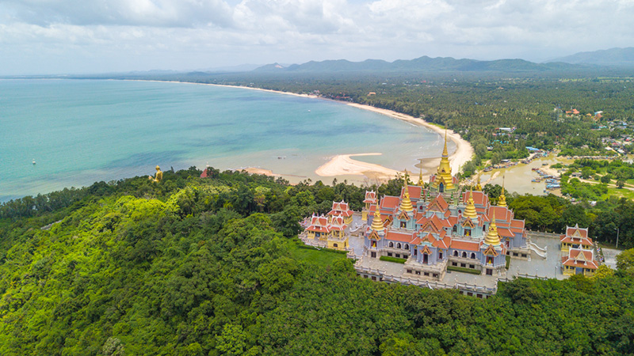

ประวัติความเป็นมาของจังหวัดประจวบคีรีขันธ์
อำเภอเมืองประจวบคีรีขันธ์เดิมในสมัยกรุงศรีอยุธยา มีชื่อว่า "เมืองนารัง" หรือ "เมืองบางนางรม"
ดังปรากฏในหนังสือคำให้การชาวกรุงเก่าได้ลำดับชื่อหัวเมืองปักษ์ใต้ดังนี้ "เมืองปราณ เมืองชะอัง เมืองนารัง
เมืองบางตะพาน" เมืองเหล่านี้ก็คือ อำเภอปราณบุรี อำเภอชะอำ อำเภอเมืองประจวบคีรีขันธ์
และอำเภอบางสะพานในปัจจุบัน
หลังกรุงศรีอยุธยาเสียแก่พม่าเมื่อปี พ.ศ. 2310 เมืองนารัง (บางนางรม) ก็เลิกร้างไป จนถึงสมัยรัชกาลที่ 2
แห่งกรุงรัตนโกสินทร์ โปรดเกล้าฯ ให้ตั้งเมืองบางนางรมขึ้นใหม่ที่ปากคลองบางนางรม
แต่ที่ดินไม่เหมาะสมแก่การเพาะปลูก จึงย้ายที่ว่าการเมืองไปตั้งที่เมืองกุย ครั้นสมัยรัชกาลที่ 4 พ.ศ. 2398
โปรดเกล้าฯ ให้เปลี่ยนชื่อจากเมืองกุยเป็น "เมืองประจวบคีรีขันธ์" โดยรวมเมืองกุย เมืองคลองวาฬ
เมืองบางนางรมเข้าด้วยกัน โดยที่ตั้งเมืองยังคงตั้งอยู่ที่เมืองกุย (คืออำเภอกุยบุรีในปัจจุบัน)
ครั้นถึงสมัยรัชกาลที่ 5 ทรงจัดการปกครองแบบมณฑลเทศาภิบาล ตั้งมณฑลราชบุรี ขึ้นในปี พ.ศ. 2438
เมืองประจวบคีรีขันธ์ซึ่งเป็นเมืองชั้นจัตวาขึ้นกับแขวงเมืองเพชรบุรีนั้นจึงได้รับจัดตั้งเป็น
อำเภอเมืองประจวบคีรีขันธ์ สังกัดเมืองเพชรบุรี มณฑลราชบุรี
พ.ศ. 2441 โปรดเกล้าฯ ให้ย้ายที่ว่าการอำเภอเมืองประจวบคีรีขันธ์ มาตั้งอยู่ที่อ่าวเกาะหลัก ต่อมา วันที่ 2
มกราคม พ.ศ. 2449
พระบาทสมเด็จพระจุลจอมเกล้าเจ้าอยู่หัวได้มีพระบรมราชโองการเหนือเกล้าให้รวมเอาอำเภอเมืองปราณบุรี
อำเภอเมืองประจวบคีรีขันธุ์ จังหวัดเพชรบุรี และอำเภอกำเนิดนพคุณ จังหวัดชุมพร
ซึ่งเป็นเมืองชั้นจัตวามาก่อนเข้ารวมเป็นเมืองปราณบุรี (จังหวัดปราณบุรี) ตั้งที่ตำบลเกาะหลัก
อำเภอเมืองประจวบคีรีขันธ์จึงได้แยกจากเมืองเพชรบุรีมาอยู่ในการปกครองของเมืองปราณบุรี เป็น
อำเภอประจวบคีรีขันธ์ ในสมัยรัชกาลที่ 6 โปรดให้เปลี่ยนชื่อเมืองปราณบุรีเป็น "เมืองประจวบคีรีขันธ์"
เมื่อวันที่ 16 สิงหาคม พ.ศ. 2458 อำเภอประจวบคีรีขันธ์จึงสังกัดเมืองประจวบคีรีขันธ์
(ซึ่งต่อมาเปลี่ยนเป็นจังหวัดประจวบคีรีขันธ์) จนกระทั่งมีการเปลี่ยนชื่ออำเภอเป็น อำเภอเมืองประจวบคีรีขันธ์
และมีการเปลี่ยนนามอำเภอตามชื่อตำบลที่ตั้งอำเภอคือ อำเภอเกาะหลัก ภายหลังได้เปลี่ยนกลับมาเป็น
"อำเภอเมืองประจวบคีรีขันธ์" จวบจนถึงปัจจุบัน